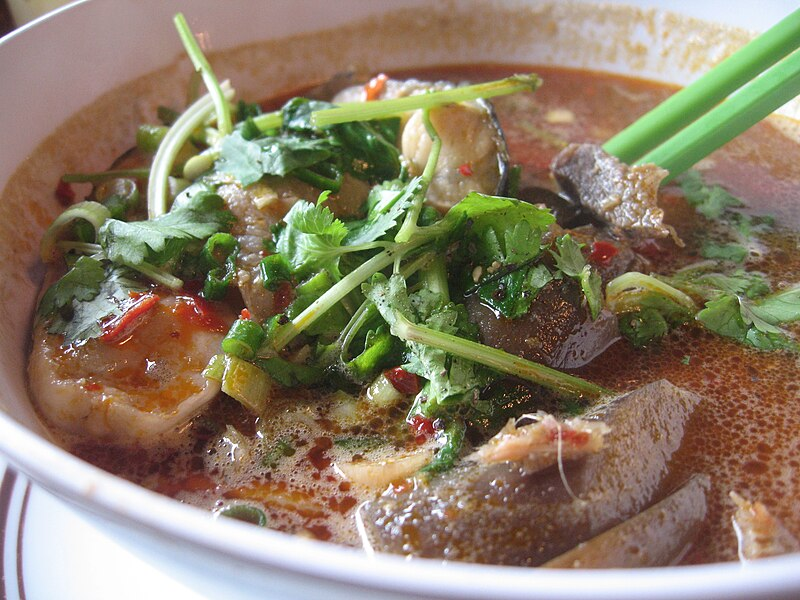

Bun Mam

Originating from Vietnam's South, Bun Mam is a rice noodle soup
characterized by its robust broth. It's also popularly known
as a Vietnamese seafood gumbo, which truly captures
its strong-flavored stock made from fermented fish.
Ingredients
- 1 jar fermented fish
- 2 tablespoons minced garlic
- 2 tablespoons minced lemongrass (tender white bottom parts only)
- 2 whole lemon grass stalks (smashed)
- 2 tablespoons minced shallots
- 1/2 lb sliced pork belly (optional)
- 3-4 eggplants (cut into bite size pieces then soak
in salted water for 15 minutes)
- 1 lb white fish fillets (cut into bite size piece)
- 1 lb shrimp (peel and devein)
- 1 lb squid (cut into bite-size pieces)
- 2 teaspoons salt
- 1 tablespoon chicken bouillon powder
- Vegetable platter (bean sprouts, garlic chives, perilla, sliced red chilis and limes)
- 1 package vermicelli noodles (cook per package instructions)
Steps
- Fill a small pot with 1 liter water (about 4 cups) and
bring to a boil. Add in the whole jar of fermented fish
and cook for 5 minutes until the fish fermented fish is
completely dissolved. Scoop out any foam that floats to
the top and discard. Pour the liquid through a
fine-sieve strainer. Discard the tiny bones in the
strainer and set aside the liquid.
- In a large stock pot, heat vegetable oil. Add minced
garlic, shallot and lemon grass. Saute until fragrant.
Add 3 liters water. Pour in the fermented fish broth and
bring pot to a boil. Add pork belly (optional), eggplant
and bruised lemon grass stalks. Cook for 30 minutes on a
low simmer.
- Add fish in a metal basket and lower the basket
directly in the broth to cook. Remove fish and set
aside. Do the same for shrimp and squid.
- Season broth with salt and chicken/pork/mushroom
stock powder.
- To serve, add handful of vermicelli noodles
into bowl, ladle on hot broth, then add seafood toppings.
Serve with a plentiful platters of Vietnamese herbs,
lime wedges and red chili.